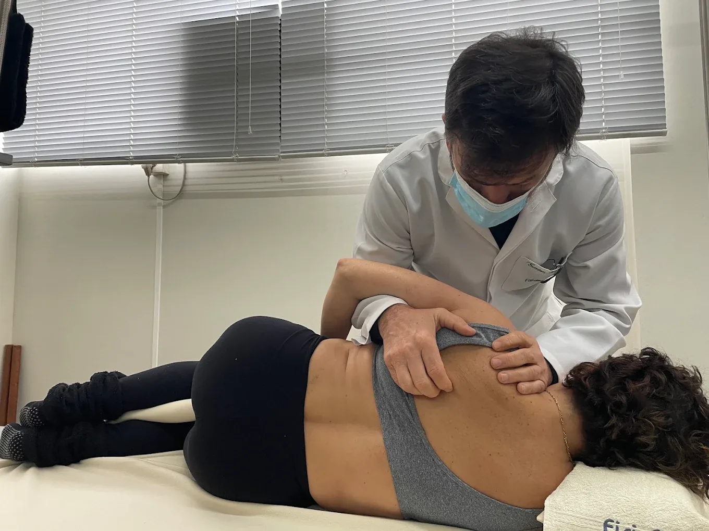
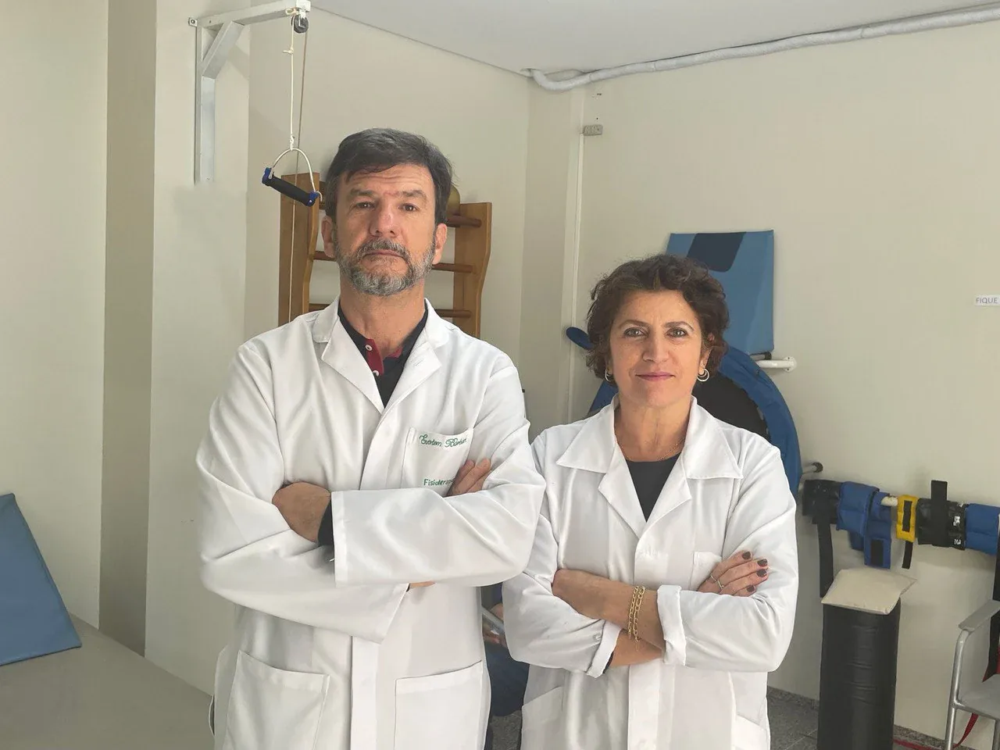
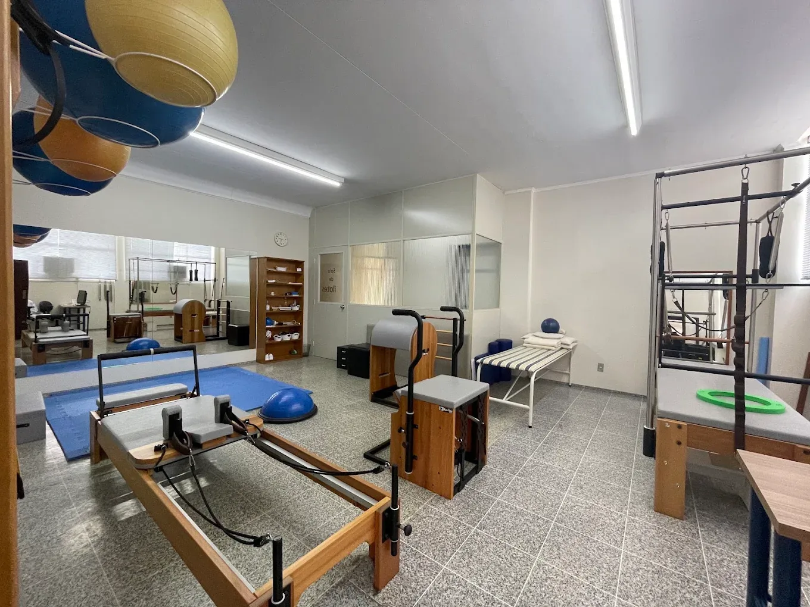
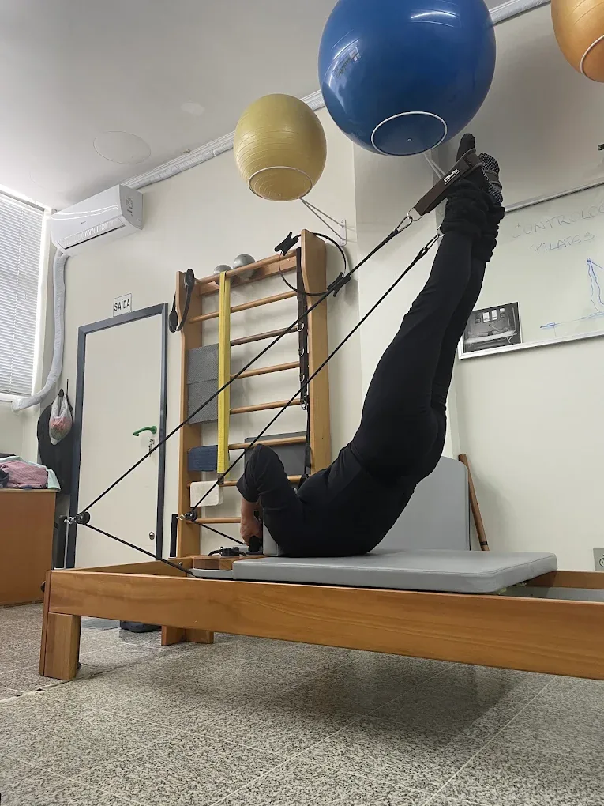
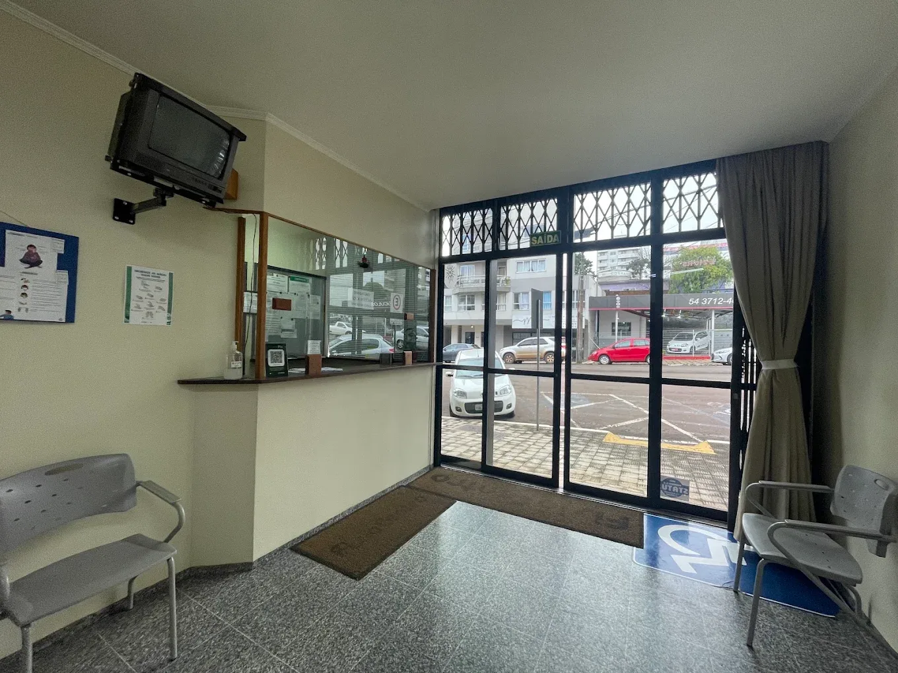

RECUPERAÇÃO E REABILITAÇÃO
Fisioterapia
Acompanhamento fisioterapêutico individualizado para questões de mobilidade, dores, lesões e recuperação funcional.
↗Desde 1987, a FisioCentro acompanha pacientes em Erechim com atendimento individualizado, experiência e atenção a cada etapa do cuidado.

Da avaliação ao acompanhamento, cada atendimento considera as necessidades e os objetivos de quem procura a clínica.
Acompanhamento fisioterapêutico individualizado para questões de mobilidade, dores, lesões e recuperação funcional.
↗Uma prática que trabalha força, equilíbrio, flexibilidade e consciência do movimento.
↗Abordagem de avaliação e cuidado que utiliza técnicas manuais conforme as necessidades de cada paciente.
↗Terapias manuais, liberação miofascial, cuidados para a coluna e fisioterapia pulmonar.
↗Mais liberdade no dia a dia.
Mais confiança em cada passo.

Desde 1987, a FisioCentro faz parte da história da fisioterapia em Erechim.
Com atendimento próximo e individualizado, a clínica reúne experiência profissional e diferentes abordagens para acompanhar as necessidades de cada paciente.
Nosso compromisso é entender cada situação, cuidar do movimento e oferecer um ambiente de atenção e acolhimento.
Conheça alguns dos ambientes e equipamentos da FisioCentro, na região central de Erechim.



Conheça os profissionais apresentados pela FisioCentro. Uma equipe que valoriza o acompanhamento individual e a proximidade com os pacientes.
Algumas informações para ajudar você a entrar em contato com a clínica.
Sim. A clínica informa que oferece atendimentos particulares e por diferentes convênios. Consulte a equipe para confirmar a cobertura do seu plano.
Entre os serviços divulgados estão fisioterapia, osteopatia, Pilates, terapias manuais, liberação miofascial e fisioterapia pulmonar.
Você pode entrar em contato pelo telefone (54) 3321-5477 para consultar disponibilidade e orientações de agendamento.
Rua Aratiba, 626, Sala 02, Centro, Erechim – RS, CEP 99700-018.
Entre em contato com a FisioCentro para saber mais sobre os atendimentos e consultar disponibilidade de horários.
Ligar para agendar